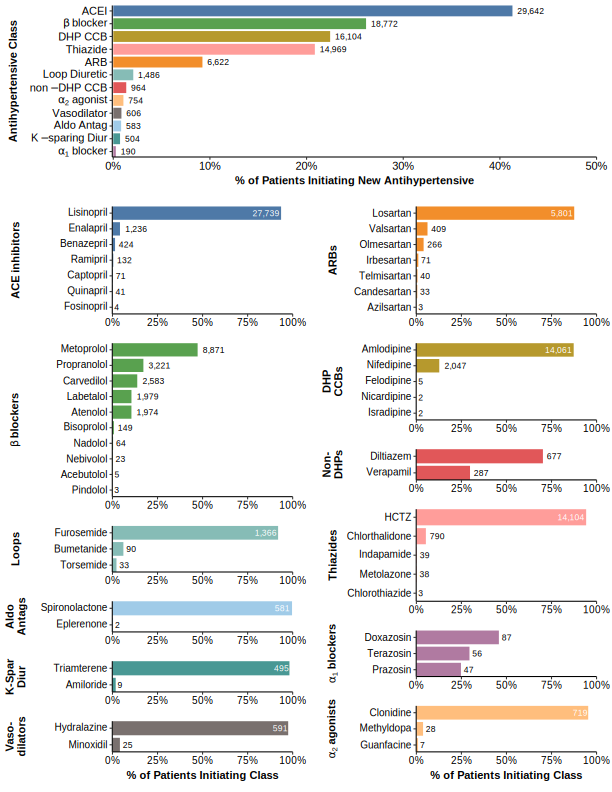
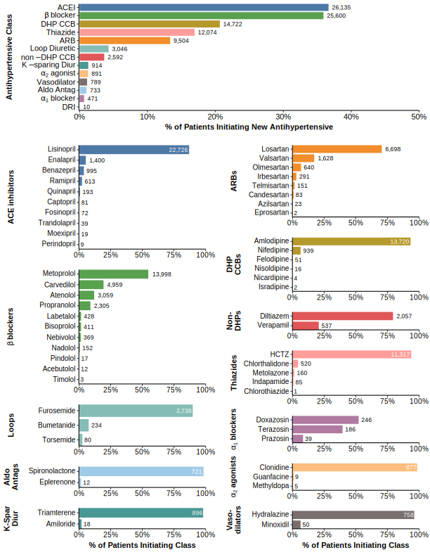
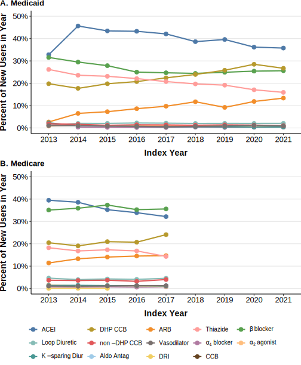
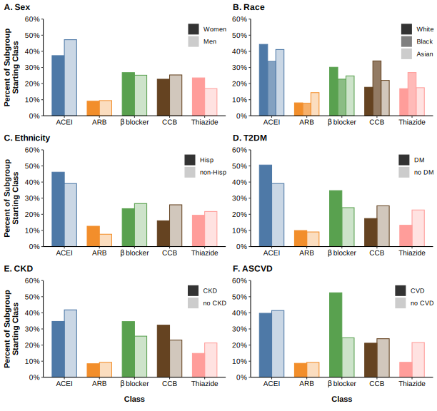
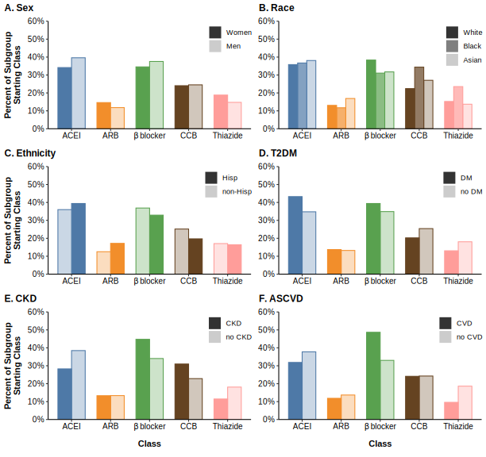

| Characteristic | Overall, N = 143,0541 | Medicaid, N = 71,7741 | Medicare, N = 71,2801 |
|---|---|---|---|
| Age, years | 59 ± 22 | 47 ± 14 | 72 ± 20 |
| Age Category | |||
| <45 y | 38,213 (27%) | 33,176 (46%) | 5,037 (7.1%) |
| 45-64 y | 51,007 (36%) | 34,274 (48%) | 16,733 (23%) |
| >65 y | 53,834 (38%) | 4,324 (6.0%) | 49,510 (69%) |
| Sex | |||
| Female | 81,555 (57%) | 43,011 (60%) | 38,544 (54%) |
| Male | 61,493 (43%) | 28,760 (40%) | 32,733 (46%) |
| Unknown | 6 (<0.1%) | 3 (<0.1%) | 3 (<0.1%) |
| Race | |||
| American Indian or Alaska Native | 334 (0.2%) | 165 (0.2%) | 169 (0.2%) |
| Asian | 1,447 (1.0%) | 659 (0.9%) | 788 (1.1%) |
| Black or African American | 33,814 (24%) | 22,041 (31%) | 11,773 (17%) |
| Native Hawaiian or Other Pacific | 33 (<0.1%) | 11 (<0.1%) | 22 (<0.1%) |
| White | 70,156 (49%) | 25,304 (35%) | 44,852 (63%) |
| Multiple Race | 503 (0.4%) | 167 (0.2%) | 336 (0.5%) |
| Other | 20,555 (14%) | 11,610 (16%) | 8,945 (13%) |
| Unknown | 16,212 (11%) | 11,817 (16%) | 4,395 (6.2%) |
| Ethnicity | |||
| Hispanic | 22,680 (16%) | 13,016 (18%) | 9,664 (14%) |
| Not Hispanic | 99,483 (70%) | 44,696 (62%) | 54,787 (77%) |
| Unknown | 20,891 (15%) | 14,062 (20%) | 6,829 (9.6%) |
| Current Smoker | 32,080 (22%) | 17,035 (24%) | 15,045 (21%) |
| Diabetes | 29,633 (21%) | 13,802 (19%) | 15,831 (22%) |
| Chronic kidney disease | 17,626 (12%) | 5,111 (7.1%) | 12,515 (18%) |
| End-stage renal disease | 1,072 (0.7%) | 233 (0.3%) | 839 (1.2%) |
| Heart failure w/ reduced EF | 2,858 (2.0%) | 1,264 (1.8%) | 1,594 (2.2%) |
| Coronary heart disease | 7,940 (5.6%) | 2,742 (3.8%) | 5,198 (7.3%) |
| Prior coronary revascularization | 728 (0.5%) | 142 (0.2%) | 586 (0.8%) |
| Prior stroke or TIA | 2,292 (1.6%) | 309 (0.4%) | 1,983 (2.8%) |
| Peripheral arterial disease | 9,388 (6.6%) | 1,483 (2.1%) | 7,905 (11%) |
| History of clinical ASCVD | 17,416 (12%) | 4,229 (5.9%) | 13,187 (19%) |
| Atrial fibrillation | 10,024 (7.0%) | 1,375 (1.9%) | 8,649 (12%) |
| Chronic obstructive pulmonary disease | 7,769 (5.4%) | 4,588 (6.4%) | 3,181 (4.5%) |
| Asthma | 6,066 (4.2%) | 4,855 (6.8%) | 1,211 (1.7%) |
| Depression | 25,690 (18%) | 10,670 (15%) | 15,020 (21%) |
| Combined Comorbidity Score | 2.5 ± 3.5 | 1.6 ± 2.8 | 3.5 ± 3.9 |
| Statin | 31,421 (22%) | 13,201 (18%) | 18,220 (26%) |
| Aspirin | 11,663 (8.2%) | 6,115 (8.5%) | 5,548 (7.8%) |
| Index Year | |||
| 2012 | 32 (<0.1%) | 1 (<0.1%) | 31 (<0.1%) |
| 2013 | 17,728 (12%) | 485 (0.7%) | 17,243 (24%) |
| 2014 | 31,711 (22%) | 11,457 (16%) | 20,254 (28%) |
| 2015 | 27,205 (19%) | 11,039 (15%) | 16,166 (23%) |
| 2016 | 19,283 (13%) | 10,664 (15%) | 8,619 (12%) |
| 2017 | 18,661 (13%) | 9,694 (14%) | 8,967 (13%) |
| 2018 | 8,963 (6.3%) | 8,963 (12%) | 0 (0%) |
| 2019 | 8,164 (5.7%) | 8,164 (11%) | 0 (0%) |
| 2020 | 7,520 (5.3%) | 7,520 (10%) | 0 (0%) |
| 2021 | 3,787 (2.6%) | 3,787 (5.3%) | 0 (0%) |
| 1 Mean ± SD; n (%) | |||
Initial Antihypertensive Regimens in Newly Treated Patients: Real World Evidence from the OneFlorida+ Clinical Research Network
Status: in press (Journal of the American Heart Association)
INTRODUCTION
Hypertension affects an estimated 120 million individuals in the U.S. and is the leading modifiable risk factor for cardiovascular disease and death.1 Nearly all of these individuals ultimately require antihypertensive therapy to achieve blood pressure (BP) control, and as a consequence, several antihypertensive drugs are among the most commonly used medications worldwide. Consensus U.S. and international guidelines have long recommended certain antihypertensive classes as ‘first-line’ therapies – namely angiotensin-converting enzyme inhibitors (ACEIs), angiotensin receptor blockers (ARBs), thiazide diuretics, calcium channel blockers (CCBs), and, until relatively recently, β-blockers.2,3 However, for most patients with uncomplicated hypertension, guidelines generally do not prioritize any of these classes except in select circumstances, leaving prescribers to choose from some 30 to 40 antihypertensive drugs when initiating antihypertensive therapy.
Real world antihypertensive utilization patterns have been studied extensively, but in almost all cases, the focus of these studies has been on treatment patterns in prevalent hypertension cohorts.4–14 These studies provide useful insight into overall antihypertensive use in populations. However, they rarely have distinguished between patients who are early in their treatment course from those with long-standing hypertension and who may have extensive treatment histories and multi-drug regimens that have evolved over time. Thus, very little is known about contemporary patterns of early antihypertensive care, including initial antihypertensive regimens, and to what extent these accord with care typically recommended in consensus guidelines. These gaps are noteworthy in light of the fact that only approximately one in five U.S. patients with hypertension have BP controlled to <130/80 mm Hg.1 Thus, delays in achieving BP control are exceedingly common in routine practice and extend high-risk periods, leading to worse outcomes.12,15 A greater understanding of how antihypertensive regimens emerge and evolve early in therapy may aid in identifying quality care gaps that can be intervened on.
To address this gap, we used the OneFlorida+ Clinical Research Consortium (hereafter, OneFlorida+) to characterize initial treatment regimens among a diverse cohort of new users of antihypertensive therapy. We were principally interested in the distribution of classes, specific antihypertensive drugs within classes, how these distributions differed in pre-specified demographic and clinical groups, and their trends over time.
METHODS
We conducted a cross-sectional study of initial antihypertensive medication use among individuals with newly-treated hypertension using patient-level data from OneFlorida+ from 2012 through September 2021. The study was approved by the University of Florida Institutional Review Board, with a full waiver of informed consent for research involving data previously collected for non-research purposes. The OneFlorida+ steering committee also approved the study. Data underlying this study may be obtained through the OneFlorida+ Front Door (https://onefloridaconsortium.org/) by qualified researchers trained in human subject confidentiality protocols.
Data Source
OneFlorida+ is one of eight clinical research networks comprising the Patient-Centered Outcomes Research network (PCORnet). OneFlorida+ serves as a data repository for patient-level data from both health system partners and insurers. Administrative claims data for this project included all available Florida Medicaid (Jan 1, 2012 through Sep 30, 2021) and Medicare (Jan 1, 2012 through Dec 31, 2017) data. All data sources are mapped to the PCORnet common data model (version 6.0) to ensure standardization of data elements across sources. Major data elements in the common data model include demographics, enrollment, encounters, diagnoses, procedures, dispensed medications, and deaths. In the present study, we included only Florida Medicaid or Medicare recipients with claims data available. This approach was chosen to minimize misclassification of new antihypertensive users, by ensuring a sustained period of continuous eligibility (≥1 year) without any dispensing history of antihypertensive therapy prior to the index antihypertensive fill.
Participants and Cohort Development
The study design and data collection are summarized in Figure S1. Patients were included if they were aged ≥18 years, dispensed a new antihypertensive medication from ≥1 of 5 ‘first-line’ classes (ACEIs, ARBs, CCBs, thiazide diuretics, or beta blockers) between Dec 31, 2012 and Dec 31, 2017 (for Medicare recipients) or September 30, 2021 (Medicaid recipients), and were continuously enrolled in the respective coverage for 365 days prior to and including the date of first dispensing of the above antihypertensive medication(s). The date of first antihypertensive medication fill was considered the index date, and data for all antihypertensives filled on the index date were collected, even if ≥1 of these newly filled antihypertensives were not ‘first-line’ classes. Patients filling antihypertensives from second line classes prior to the first fill date of the above first-line classes were not considered new-users and were excluded from the cohort. Eligible antihypertensive drugs are summarized in Table S1 and a complete list of national drug codes (NDCs) can be downloaded at https://github.com/ssmithm/rxnorm-drug-lists/tree/master/antihypertensive_drugs. Patients were also required to have a hypertension diagnosis (ICD-9, 401.X; ICD-10, I10) within the baseline period defined as 365 days prior to and including the index date.
Data Collection
Baseline characteristics were measured during the baseline period (generally 1 year prior to and including index date), as per the definitions summarized in Table S2. Demographic information (sex, race, ethnicity, birth date) was drawn from the original claims data demographic files (mapped to the PCORnet common data model); when possible, we supplemented missing values with linked EHR-based data for sex, race, and ethnicity (each patient-reported). Discrepancies between claims and EHR-based demographic data were resolved by giving self-report EHR data primacy. Antihypertensive regimen information was collected for all antihypertensives dispensed on the index date, with antihypertensives grouped into classes as summarized in Table S1.
Data Analysis
We summarized baseline characteristics using mean and standard deviation for continuous variables and n (%) for categorical variables in the overall study population and stratified by insurer (Medicaid, Medicare). Within insurance strata, we calculated the proportion of individuals initiating each class and, within class, each drug. In addition to stratifying analyses by insurer, we performed stratified analyses by pre-specified demographic (sex, race, ethnicity) and comorbidity (chronic kidney disease [CKD], diabetes, and clinical atherosclerotic cardiovascular disease [ASCVD]) strata and assessed differences by calculating standardized mean differences (SMD) between groups.16 We further assessed use of recommended therapy among Black/African American patients with and without CKD or heart failure (HF), based on explicit recommendations in the current U.S. guidelines (i.e., DHP CCBs or thiazides as preferred initial agents among those without CKD or HF).3,17 For patients initiating dual antihypertensive regimens, we calculated the proportion of regimens that were guideline concordant (two first-line antihypertensives from different classes), partially concordant (one first-line and one second-line) or discordant (two second-line agents or two first-line agents from the same class) according to current U.S. guidelines.3 Finally, we analyzed changes over time in initial antihypertensive regimens by stratifying medication use according to the year of the index date and graphically displaying these data to identify trends in proportion of each class prescribed. The Cochrane-Armitage test was used for trend tests of antihypertensive classes. All data were analyzed with R 4.2.0 (R Foundation, Vienna, Austria).
RESULTS
We identified a total of 143,054 patients with newly-treated hypertension, with approximately similar numbers of Medicaid (n=71,774; 50.1% of total cohort) and Medicare (n=71,280; 49.8% of total cohort) recipients (Figure S2). Baseline characteristics of the cohort are summarized in Table 1. Briefly, patients were aged 59 years on average (Medicaid, 47 years vs. Medicare, 72 years) and 57% were women. A plurality of patients self-reported as White (49% overall; Medicaid, 35% vs. Medicare, 63%), 24% (Medicaid, 31%; Medicare, 17%) as Black or African American, and 12% had missing race information; 16% (Medicaid, 18%; Medicare, 14%) were Hispanic. The most common comorbidities were diabetes (21%) and depression (18%), and nearly one-quarter were current smokers. Chronic kidney disease and ASCVD were considerably more common in the Medicare versus Medicaid population.
Initial Antihypertensive Use
In the overall population, most patients (75.4%) were initiated on a single agent, whereas 18.8% were initiated on 2 agents simultaneously, and 5.8% on ≥3 agents simultaneously. Crude rates of combination therapy were higher among Medicare- (28%) versus Medicaid-insured (21%) individuals, though these differences were minimized substantially after age-adjustment (Table S3).
Figure 1 summarizes the proportion of Medicaid-insured patients initiating each class of antihypertensives, as well as proportion initiating each drug within each class. Briefly, the most common classes initiated were ACEIs (39% of patients) and β-blockers (31%), followed by DHP CCBs (22%), thiazide diuretics (19%) and ARBs (11%). Use of most classes was predominated by a single agent, namely lisinopril (94% of ACEI initiators), amlodipine (87% of DHP CCB initiators), hydrochlorothiazide (94% of thiazide initiators), and losartan (88% of ARB initiators). β-blockers were more evenly distributed across metoprolol (47%), propranolol (17%), carvedilol (14%) and atenolol and labetalol (each 11%). Figure 2 presents corresponding information for Medicare-insured patients, in which ACEIs (37%) and β-blockers (36%) were the most often initiated, followed by DHP CCBs (21%), thiazide diuretics (17%), and ARBs (13%). The rank-order of drugs within class was generally similar among the Medicare-, compared with Medicaid-insured, cohorts.


Antihypertensive use patterns among patients initiating monotherapy within the Medicaid cohort were generally similar to the overall Medicaid cohort in terms of rank ordering of classes and drugs within class (Figure S3). Likewise, compared to the overall Medicare cohort, patients initiating monotherapy had similar antihypertensive initiation patterns except that ARBs were initiated more often than thiazide diuretics (10% vs. 7% among monotherapy initiators; 13% vs. 17% among all Medicare patients) (Figure S4). Among patients initiating two antihypertensives simultaneously, the most common combination was an ACEI + thiazide diuretic (24% of all 2-drug combinations overall), which was the preferred two-drug combination in both cohorts (31% of all 2-drug combinations in the Medicaid cohort and 18% in the Medicare cohort; Table S4). The next three most common combinations were ACEI + β-blocker (14% overall), ARB + thiazide diuretic (11% overall) and ACEI + CCB (10% overall). Among Medicaid recipients, only 59% of all two-drug combinations were considered guideline-concordant (i.e., using drugs from two first-line antihypertensives) per current U.S. guidelines, whereas 36% were partially concordant (combining one first-line and one second-line antihypertensive) and 5% were fully discordant (Figure S5). Among Medicare recipients, 47% of patients initiated guideline-concordant two-drug combinations, whereas 45% were partially concordant and 8% were fully discordant (Figure S6). Finally, among all patients initiating ≥2 antihypertensives concomitantly, nearly one-third (33.8%) used at least one fixed-dose combination product, with a slightly higher proportion among Medicaid vs. Medicare recipients (35.2% vs. 32.7%).
Time Trends
Figure 3 and Figure S7 summarize the proportion of patients starting each class over time. Notable changes from 2013 through 2021 were increased use of DHP CCBs (20% to 27% overall; p<0.0001) and decreased use of β-blockers (32% to 26%; p<0.0001) among Medicaid recipients. Dihydropyridine CCB initiation also increased over time in Medicare recipients (20% in 2013 to 24% in 2017), whereas but no change was observed for β-blockers. ACEI initiation decreased modestly overall (39% to 36%; p<0.0001) and in each cohort separately, as did thiazide use (Medicaid, 26% to 16%, p<0.0001; Medicare, 18% to 14%, p<0.0001). ARB initiation increased by a similar magnitude (Medicaid, 3% to 13%, p<0.0001; Medicare, 11% to 15%, p<0.0001). Time trends of drug within class are presented in Figure S8 and S9. Analyses limited to patients initiating monotherapy showed remarkably similar trends (data not shown).

Stratified Analyses: Demographics and Comorbidities
The proportions of patients initiating each of the 5 major classes across pre-specified strata are summarized in Figure 4 (Medicaid) and Figure 5 (Medicare), with additional detailed data in Table S5. Among both cohorts, men were more likely than women to initiate ACEIs, whereas the reverse was true for thiazides, especially among Medicaid recipients (Panel A). Black patients were more likely to initiate CCBs (primarily DHP CCBs) or thiazides, compared with White and Asian patients in both cohorts (Panel B). Black patients, compared with White and Asian patients, were also less likely to initiate ACEIs in the Medicaid cohort, whereas no meaningful difference was observed in Medicare-insured individuals. Additional analyses among monotherapy-treated Black participants with and without CKD or HF are summarized in Figure S10. Briefly, comparing those with either CKD or HF versus without CKD nor HF, we observed fewer patients initiating ACEIs (24% vs. 27% [SMD, 0.08] in the Medicaid cohort; 20% vs. 31% [SMD, 0.26] in the Medicare cohort) and thiazides (12% vs. 18% [SMD, 0.16] in Medicaid; 6% vs. 12% [SMD, 0.23] in Medicare), and similar proportions initiating ARBs. In the Medicare cohort, β-blocker use was much higher in the CKD/HF population (36%) compared to those with neither CKD nor HF (22%; SMD, 0.31), whereas we observed little difference in β-blocker use in these populations among Medicaid-insured (22% vs. 18%; SMD, 0.08).


Hispanic patients had moderately higher initiation of ACEI or ARB therapy and lower initiation of CCBs or β-blockers in each cohort (Figure 4 & Figure 5, Panel C). Diabetes, versus no diabetes, was associated with greater ACEI but not ARB use in both cohorts, as well as higher β-blocker use, but lower CCB and thiazide use (Figure 4 & Figure 5, Panel D). ACEIs were initiated in only 30% of patients meeting CKD criteria overall (Medicaid, 35%; Medicare, 28%), versus 40% of those not meeting CKD criteria (Medicaid, 42%; Medicare, 39%); CCB and β-blockers were each initiated considerably more commonly in those with CKD, whereas thiazides were initiated more commonly in those without CKD (Figure 4 & Figure 5, Panel E). Finally, among patients with ASCVD in both cohorts, approximately half initiated a β-blocker, whereas only 10% initiated a thiazide, and use of other classes differed only modestly (≤6%) between those with and without ASCVD (Figure 4 & Figure 5, Panel F).
DISCUSSION
In this large, population-based study, we characterized antihypertensive regimens among patients with newly-treated hypertension. We focused our cohort among Medicare and Medicaid recipients who initiated ≥1 first-line antihypertensive classes (including β-blockers, considered first-line therapy during a portion of our study years), to better understand treatment initiation patterns and to complement existing literature which provide data on prevalent hypertension cohorts. Our principal findings are that initiation of monotherapy remains remarkably common and significant variation exists in initial antihypertensive regimens, with ≤41% of patients prescribed any single class in either study population. Within classes, there exists very little variation in choice of initial antihypertensive drug, especially among current first-line therapies (ACEI, ARB, CCBs, thiazides), in which a single drug predominates in ≥70% of cases. Time trends in antihypertensive initiation have remained fairly stable, although ACEI and β-blocker use (among Medicaid recipients) has decreased significantly, replaced by increased DHP CCB and ARB use between 2013 and 2021. Finally, we observed notable differences in antihypertensive initiation in stratified analyses across demographic and clinical characteristics. To our knowledge, this is one of the largest and most detailed characterizations of real-world utilization of antihypertensives in newly-treated patients.
Limited data have been published regarding initial use of antihypertensive classes. A recent study examined time trends in first-line antihypertensives between 2008-2017 in Medicare recipients, primarily focused on patients initiating monotherapy.18 In that population, thiazide initiation decreased and CCB initiation increased, similar to our findings. In contrast, they found reduced initiation of β-blockers over time, whereas we observed stable β-blocker initiation, though β-blockers remain one of the most commonly initiated antihypertensives through 2017 in both studies. Finally, they observed increased use of ACEIs and ARBs, particularly among individuals without any comorbidities. It remains unclear to what extent this finding was driven by increased ACEI initiation, ARB initiation, or both. Among both our Medicare and Medicaid populations, we found consistent decreases in ACEI initiation over time, whereas ARB initiation increased in both cohorts.18 Thus, it is possible that these findings are consistent. On the other hand, our data suggest that comparatively few patients initiate ARBs compared with ACEIs, even in the most recent years. Few other studies have explicitly characterized antihypertensive new user regimens; however, some additional insights may be gleaned from “real-world” comparative effectiveness studies enrolling only new antihypertensive users. For example, the LEGEND-HTN study included only new antihypertensive users of first-line antihypertensives from multiple claims and EHR-based cohorts, and found, similar to our study, that ACEIs were the most common antihypertensive initiated across multiple claims and EHR-based cohorts, followed by DHP CCBs, thiazides, ARBs, and non-DHP CCBs (β-blockers were not studied).19
Compared to recent data from U.S. prevalent hypertension cohorts, our findings regarding initial antihypertensive classes share some similarities but also noteworthy differences. For example, a recent analysis of National Health and Nutrition Examination Survey (NHANES) data found that from 2013-2016, nearly three quarters (74%) of antihypertensive regimens contained an ACEI or ARB, whereas 43% contained a diuretic, 35% contained a β-blocker, and 29% contained a CCB.14 Our data, too, showed ACEIs as the predominant class initiated overall and in the Medicaid cohort for every year over the study period, and only used marginally less in the Medicare cohort. However, we observed considerably lower proportions of initial regimens containing CCBs (<25%) and thiazides (<20%), despite having a considerably higher proportion of Black patients and, as might be expected with a newly-diagnosed hypertensive population, fewer patients with diagnosed CKD or HF, than in the NHANES samples. Similar trends were observed among those initiating only monotherapy in our study. Our results also revealed remarkably low ARB initiation, though there was evidence of a moderate shift over time from ACEI to ARB as preferred renin angiotensin system inhibitor. This finding may reflect increasingly robust evidence for their equivalent outcomes in hypertension and greater tolerability with ARBs,20,21 as well as a narrowing of practice differences between U.S. and international cohorts, the latter of which generally show considerably higher ARB initiation among new antihypertensive users.4,22,23 Finally, among Medicaid recipients, we observed reduced initiation of β-blockers and greater initiation of DHP CCBs, such that by 2021, DHP CCBs (and CCBs, overall) were initiated more frequently than β-blockers. Among Medicare patients, we saw a similar rise in DHP CCB use, but no change in β-blocker use. These findings are consistent with the evolving recognition of DHP CCB effectiveness as antihypertensives and concerns that β-blockers still have a role in patients with ASCVD, but may be less effective at reducing risk of major adverse outcomes in uncomplicated hypertension.24–26
Within antihypertensive classes, we saw remarkably little variation in prescribing. For all first-line classes except β-blockers, a single drug accounted for ≥70% of all initiations within class. Indeed, the four predominant drugs (lisinopril, amlodipine, hydrochlorothiazide, and losartan) accounted for >60% of all antihypertensives initiated and at least one of these drugs was present in 70% of regimens. Analysis of trends over time revealed generally stable market for most first-line agents share during the study period, with one notable exception: losartan made up 64% of all ARB initiations in 2013, increasing to 91% in 2021. Increasing trends were observed in both the Medicare- and Medicaid-insured cohorts over time, though the latter tended to initiate losartan at an approximately 10% higher rate each year than the Medicare-insured cohort. This increasing use of losartan is somewhat surprising in light of the fact that losartan often requires twice or thrice-daily dosing and has lower persistence compared with other ARBs.27
Our overall findings must also be considered in the context of the populations in which they were observed. Specifically, our data also revealed several noteworthy differences in antihypertensive prescribing across demographic variables. Our overall cohort was comprised of ~57% women and we observed significantly greater initiation of ACEIs and less initiation of thiazides in this group compared with men. This finding is qualitatively consistent with prior research in prevalent hypertensive cohorts,13 though the magnitudes of difference observed in our population was markedly greater. Interestingly, in comparisons across races, we found that ACEIs were most commonly initiated across all races, followed by β-blockers (White and Asian patients) and CCBs (Black patients), particularly in the absence of ASCVD. The greater frequency of ACEI initiation observed in Black patients is only partially explained by their greater likelihood of receiving dual therapy compared with White patients (29% vs. 25%). Even among Black patients receiving monotherapy, RAS inhibitors (including β-blockers) accounted for >50% of initial regimens in both Medicaid- and Medicare-insured. Current guidelines recommend a CCB or thiazide diuretic in Black patients without compelling indications for specific antihypertensive classes,3 yet fewer than half of Black patients received such therapy (~45% of all Black patients and ~46% of those without CKD/HF who initiated monotherapy). And, we observed comparatively less initiation of ACEI/ARB therapy in Black individuals with diagnosed CKD or HF. Combined with recent findings regarding racial disparities in treatment intensification,28 our findings may help explain some of the well-known disparities in hypertension control comparing White and Black Americans.28,29
Our study has several noteworthy limitations. First, our cohorts were derived from insurance claims in OneFlorida (Medicaid, Medicare), rather than EHR data. We chose this approach because insurance claims ensure more complete information capture (during continuous eligibility periods), whereas an EHR-based approach would have likely resulted in significant misclassification of prevalent treated hypertension as newly treated hypertension because we could not ensure a sustained period of no antihypertensive use prior to first observed prescription. This design choice has several important implications. First, our study describes only antihypertensives ultimately filled by patients. We presume that the conversion rate of prescriptions to medication fills was non-differential across first-line classes and thus prescribing patterns would reflect similar antihypertensive initiation patterns, but we cannot be certain. Second, although we followed well-established and robust methods for identifying a new-user cohort from claims data, we cannot be certain that all patients initiated therapy specifically for hypertension. Indeed, it is plausible that some patients, particularly those initiating combination regimens, may have had other indications in addition to hypertension that guided antihypertensive selection. Accordingly, the prevalences of partially concordant and fully discordant combination therapy observed may reflect, at least in part, patients with multiple comorbid conditions (hypertension and, e.g., heart failure, coronary disease, or chronic kidney disease) in which the comorbidities prompted use of ‘second-line’ therapy. Relatedly, we required all patients initiate ≥1 first-line antihypertensive, and this approach excluded a relatively small number of patients initiating second-line agents only (Figure S1). Such patients were presumed to be likelier to initiate ‘antihypertensives’ for indications other than hypertension, which we could not rule out. However, it is probable that we excluded some patients who initiated second-line therapy for hypertension. We suspect these cases are relatively infrequent, as guideline recommendations regarding which classes constitute first-line therapy (other than for β-blockers) have been generally stable for decades. Nevertheless, our analyses of second-line agents overall, and their combinations, should be considered in this context. Fourth, we had limited data on socioeconomic information for patients included in the study; consequently, we were not able to ascertain the extent to which differences in socioeconomic status may have influenced, e.g., racial differences, in medication initiation. Finally, our findings come from publicly-insured individuals and may have limited generalizability to commercially-insured or uninsured individuals.
In summary, we conducted a detailed characterization of antihypertensive initiation patterns in newly-treated patients with hypertension. Although ACEIs were most commonly initiated across almost all analyses, we observed substantial variation across first-line classes overall and within pre-specified demographic and comorbidity strata. We also observed some trends suggesting uptake of current clinical guideline recommendations, namely greater initiation of CCBs and less initiation of β-blockers. Nevertheless, we noted several findings largely inconsistent with current recommendations in the U.S., including infrequent initiation of multi-drug regimens, moderately frequent use of combination regimens that do not prioritize first-line classes, and suboptimal use of some classes in patients for whom they are explicitly prioritized. Additional research is needed to better understand why such initial treatment choices are made and whether intervening on these factors may improve outcomes in these patients.
Funding
This work was funded by the National Heart, Lung, and Blood Institute, K01 HL138172 (Dr. Smith). Research reported in this publication was also supported in part by the UF Center for Drug Evaluation and Safety; in part by the OneFlorida Clinical Data Network, funded by the Patient-Centered Outcomes Research Institute numbers CDRN-1501-26692 and RI-CRN-2020-005; in part by the OneFlorida Cancer Control Alliance, funded by the Florida Department of Health’s James and Esther King Biomedical Research Program number 4KB16; and in part by the University of Florida Clinical and Translational Science Institute and its Clinical and Translational Science Award (CTSA) hub partner, Florida State University, which are supported in part by three CTSA Program grants awarded on August 15, 2015, and renewed for five years on July 2, 2019, by the National Center for Advancing Translational Sciences of the National Institutes of Health. The UF-FSU CTSA grant numbers are UL1TR001427, KL2TR001429 and TL1TR001428. The content is solely the responsibility of the authors and does not necessarily represent the official views of the National Institutes of Health, Patient-Centered Outcomes Research Institute (PCORI) or its Board of Governors or Methodology, the OneFlorida Clinical Research Consortium, the UF-FSU Clinical and Translational Science Institute, or the Florida Department of Health.
Disclosures
The authors have no conflicts of interest to disclose.
Supplement
The data supplement for this paper can be found here.
References
1.
Muntner P, Miles MA, Jaeger BC, et al. Blood pressure control among US adults, 2009 to 2012 through 2017 to 2020. Hypertension. 2022;79(9):1971-1980. doi:10.1161/HYPERTENSIONAHA.122.19222
2.
Williams B, Mancia G, Spiering W, et al. 2018 ESC/ESH guidelines for the management of arterial hypertension. Eur Heart J. 2018;39(33):3021-3104. doi:10.1093/eurheartj/ehy339
3.
Whelton PK, Carey RM, Aronow WS, et al. 2017 ACC/AHA/AAPA/ABC/ACPM/AGS/APhA/ASH/ASPC/NMA/PCNA guideline for the prevention, detection, evaluation, and management of high blood pressure in adults: A report of the american college of cardiology/american heart association task force on clinical practice guidelines. Hypertension. 2018;71(6):e13-e115. doi:10.1161/HYP.0000000000000065
4.
Hou W, Li D, Shen S, Lin J, Lou A, Wen A. Frequency and patterns of prescribing antihypertensive agents in outpatient kidney transplant recipients among six cities in china from 2011 to 2018. Clin Ther. 2021;43(3):602-612. doi:10.1016/j.clinthera.2021.01.013
5.
Gu A, Yue Y, Argulian E. Age differences in treatment and control of hypertension in US physician offices, 2003-2010: A serial cross-sectional study. Am J Med. 2016;129(1):50-58.e4. doi:10.1016/j.amjmed.2015.07.031
6.
Gu A, Farzadeh SN, Chang YJ, Kwong A, Lam S. Patterns of antihypertensive drug utilization among US adults with diabetes and comorbid hypertension: The national health and nutrition examination survey 1999-2014. Clin Med Insights Cardiol. 2019;13:1179546819839418. doi:10.1177/1179546819839418
7.
Gu A, Yue Y, Desai RP, Argulian E. Racial and ethnic differences in antihypertensive medication use and blood pressure control among US adults with hypertension: The national health and nutrition examination survey, 2003 to 2012. Circ Cardiovasc Qual Outcomes. 2017;10(1):e003166. doi:10.1161/CIRCOUTCOMES.116.003166
8.
Shah SJ, Stafford RS. Current trends of hypertension treatment in the united states. Am J Hypertens. 2017;30(10):1008-1014. doi:10.1093/ajh/hpx085
9.
Zhou M, Daubresse M, Stafford RS, Alexander GC. National trends in the ambulatory treatment of hypertension in the united states, 1997-2012. PLoS One. 2015;10(3):e0119292. doi:10.1371/journal.pone.0119292
10.
Koifman E, Tanne D, Molshatzki N, Leibowitz A, Grossman E. Trends in antihypertensive treatment–lessons from the national acute stroke israeli (NASIS) registry. Blood Press. 2014;23(5):262-269. doi:10.3109/08037051.2013.876771
11.
Wang Z, Wang X, Chen Z, et al. Hypertension control in community health centers across china: Analysis of antihypertensive drug treatment patterns. Am J Hypertens. 2014;27(2):252-259. doi:10.1093/ajh/hpt186
12.
Weir MR, Zappe D, Orloski LA, Sowers JR. How early should blood pressure control be achieved for optimal cardiovascular outcomes? J Hum Hypertens. 2011;25(4):211-217. doi:10.1038/jhh.2010.64
13.
Zheutlin AR, Derington CG, King JB, et al. Factors associated with antihypertensive monotherapy among US adults with treated hypertension and uncontrolled blood pressure overall and by race/ethnicity, national health and nutrition examination survey 2013-2018. Am Heart J. 2022;248:150-159. doi:10.1016/j.ahj.2021.10.184
14.
Derington CG, King JB, Herrick JS, et al. Trends in antihypertensive medication monotherapy and combination use among US adults, national health and nutrition examination survey 2005-2016. Hypertension. 2020;75(4):973-981. doi:10.1161/HYPERTENSIONAHA.119.14360
15.
O’Connor PJ, Vazquez-Benitez G, Schmittdiel JA, et al. Benefits of early hypertension control on cardiovascular outcomes in patients with diabetes. Diabetes Care. 2013;36(2):322-327. doi:10.2337/dc12-0284
16.
Austin PC. Using the standardized difference to compare the prevalence of a binary variable between two groups in observational research. Communications in Statistics - Simulation and Computation. 2009;38(6):1228-1234. doi:10.1080/03610910902859574
18.
Anderson TS, Ayanian JZ, Zaslavsky AM, Souza J, Landon BE. National trends in antihypertensive treatment among older adults by race and presence of comorbidity, 2008 to 2017. J Gen Intern Med. Published online April 26, 2022. doi:10.1007/s11606-022-07612-3
19.
Suchard MA, Schuemie MJ, Krumholz HM, et al. Comprehensive comparative effectiveness and safety of first-line antihypertensive drug classes: A systematic, multinational, large-scale analysis. Lancet. 2019;394(10211):1816-1826. doi:10.1016/S0140-6736(19)32317-7
20.
Chen R, Suchard MA, Krumholz HM, et al. Comparative first-line effectiveness and safety of ACE (angiotensin-converting enzyme) inhibitors and angiotensin receptor blockers: A multinational cohort study. Hypertension. 2021;78(3):591-603. doi:10.1161/HYPERTENSIONAHA.120.16667
21.
Bangalore S, Fakheri R, Toklu B, Ogedegbe G, Weintraub H, Messerli FH. Angiotensin-converting enzyme inhibitors or angiotensin receptor blockers in patients without heart failure? Insights from 254,301 patients from randomized trials. Mayo Clin Proc. 2016;91(1):51-60. doi:10.1016/j.mayocp.2015.10.019
22.
Selmer R, Blix HS, Landmark K, Reikvam A. Choice of initial antihypertensive drugs and persistence of drug use–a 4-year follow-up of 78,453 incident users. Eur J Clin Pharmacol. 2012;68(10):1435-1442. doi:10.1007/s00228-012-1261-2
23.
Rea F, Savaré L, Franchi M, Corrao G, Mancia G. Adherence to treatment by initial antihypertensive mono and combination therapies. Am J Hypertens. 2021;34(10):1083-1091. doi:10.1093/ajh/hpab083
24.
Chan You S, Krumholz HM, Suchard MA, et al. Comprehensive comparative effectiveness and safety of first-line β-blocker monotherapy in hypertensive patients: A large-scale multicenter observational study. Hypertension. 2021;77(5):1528-1538. doi:10.1161/HYPERTENSIONAHA.120.16402
25.
Jamerson K, Weber MA, Bakris GL, et al. Benazepril plus amlodipine or hydrochlorothiazide for hypertension in high-risk patients. N Engl J Med. 2008;359(23):2417-2428. doi:10.1056/NEJMoa0806182
26.
Wiysonge CS, Bradley HA, Volmink J, Mayosi BM, Opie LH. Beta-blockers for hypertension. Cochrane Database Syst Rev. 2017;1(1):CD002003. doi:10.1002/14651858.CD002003.pub5
27.
Hasford J, Mimran A, Simons WR. A population-based european cohort study of persistence in newly diagnosed hypertensive patients. J Hum Hypertens. 2002;16(8):569-575. doi:10.1038/sj.jhh.1001451
28.
Fontil V, Pacca L, Bellows BK, et al. Association of differences in treatment intensification, missed visits, and scheduled follow-up interval with racial or ethnic disparities in blood pressure control. JAMA Cardiol. 2022;7(2):204-212. doi:10.1001/jamacardio.2021.4996
29.
Aggarwal R, Chiu N, Wadhera RK, et al. Racial/ethnic disparities in hypertension prevalence, awareness, treatment, and control in the united states, 2013 to 2018. Hypertension. 2021;78(6):1719-1726. doi:10.1161/HYPERTENSIONAHA.121.17570